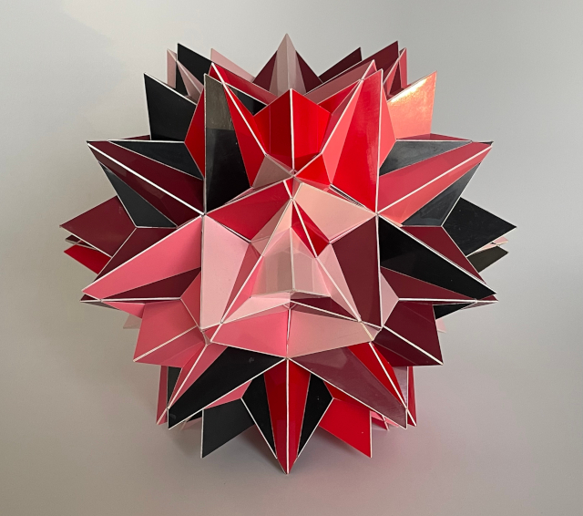

Compound of Twenty Tetrahedra

This is a rigid compound of twenty tetrahedra which has the same symmetry as an icosahedron Each tetrahedron shares one 3-fold axis with a 3-fold axis of the compound and the three reflection planes through that axis. The fact that this is a rigid compound means that you cannot rotate one base tetrahedron (called the descriptor) around an axis and then get another compound with the same symmetry after applying the symmetries. Usually this means that there is only one, however in this case another rigid compound of twenty tetrahedra exists, where each tetrahedron shares a 3-fold axis with the final symmetry. These variants are indicated by an 'A' and 'B', of which this one is the 'B' variant. These compounds are defined in an unpublished book titled "Compound Lines of Polyhedra" from Hugo Verheyen. When I searched the internet for a compound of twenty tetrahedra, but I didn't find this compound. The ones that I found on Wolfram seem to be different combinations of pairs of classical compounds of 10 tetrehedra and which means they have less symmetry.
As you can see the polyhedron has small pieces shaped like slivers, and I was afraid I wouldn't be able to build a model in a reasonable size. In the end it wasn't as hard as I expected. This model has a diameter of around 28 cm in, which is around 11 inches So far I had built most of my models by cutting out the pieces using scissors, but for this one I used a cutting machine that I just bought earlier the same year. It was the first model I built from pieces cut by that machine. I don't know how many hours I put into building this model, but it took me three months. I was finished on the first of December 2024.
Links
- Thumbnails
- Page with interactive models of compounds of Tetrahedra
- My Polyhedra Page
- Home
Last Updated
2025-08-18